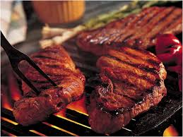
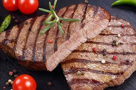
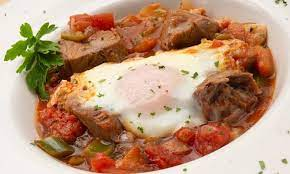
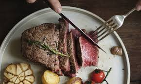
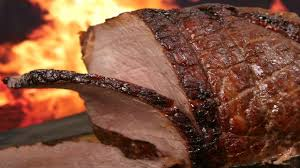

RECETAS SIMPLES
CARNES
INDICE
Carne1 sopa caliente y sabrosa parece que recompone cuerpo y espíritu.
Pero hacer una buena sopa casera, con mucho sabor pero ligera

Carne2 sopa caliente y sabrosa parece que recompone cuerpo y espíritu.
Pero hacer una buena sopa casera, con mucho sabor pero ligera

Carne3 sopa caliente y sabrosa parece que recompone cuerpo y espíritu.
Pero hacer una buena sopa casera, con mucho sabor pero ligera

Carne4 sopa caliente y sabrosa parece que recompone cuerpo y espíritu.
Pero hacer una buena sopa casera, con mucho sabor pero ligera

Carne5 sopa caliente y sabrosa parece que recompone cuerpo y espíritu.
Pero hacer una buena sopa casera, con mucho sabor pero ligera

Carne6 sopa caliente y sabrosa parece que recompone cuerpo y espíritu.
Pero hacer una buena sopa casera, con mucho sabor pero ligera
